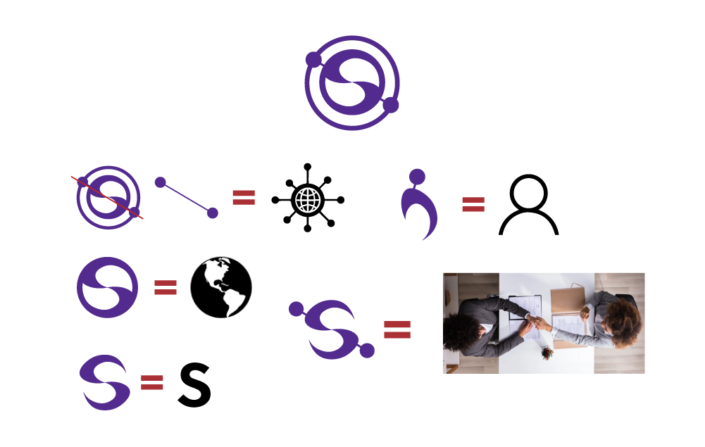

Project Overview
Organization: The Communications & Media Arts Society
Typography: Designed in collaboration with Landis Clark-Smith
Software: Adobe Illustrator
About
StratComm is an annual strategic communications competition managed by a team of students within the Communications & Media Arts Society. Communications and Media Arts students are paired with local business owners and create marketing and communications plans for the business, some of which are actually implemented. I was tasked with the creation of a fresh logo for the competition.
The Goal
The direction for the logo was that it should communicate the opportunity the competition offers for networking, connections, teamwork, and collaboration. It should also be clean and modern.
Design
The icon was inspired by simplified network icons that make use of lines and circles to visually connect nodes. This is intuitively understood as a representation of a network, making it effective imagery to communicate the chance to expand one's professional network by participating in the competition. The inner circle of the logo acts as a globe shape while also containing an "S", which stands for StratComm. The components of the "S", along with the network nodes, also form two simplified people shaking hands. This represents the teamwork involved in the competition. The outer circle connects the two heads of the people, which depicts the sharing of ideas and collaborative planning.
